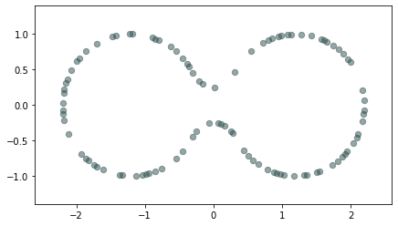
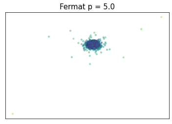
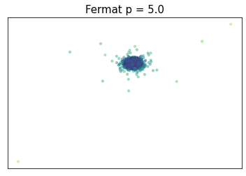
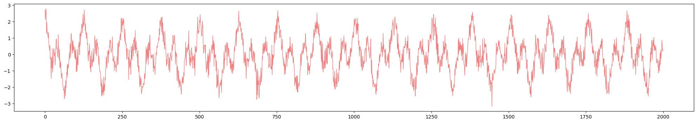
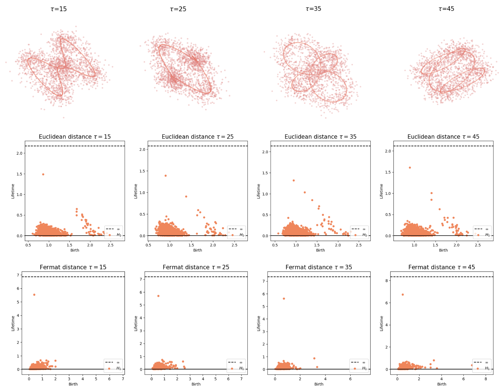
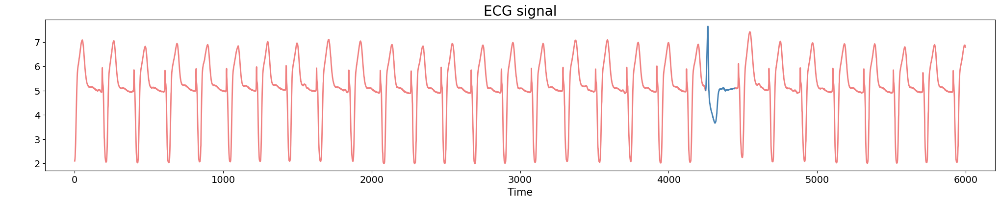
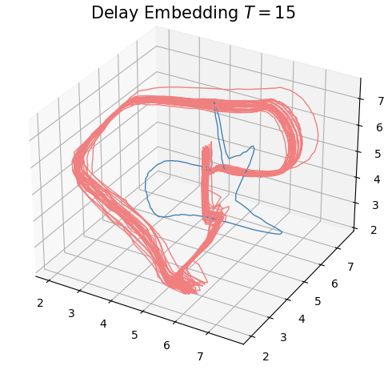

Intrinsic persistent homology
via density-based metric learning
XIMENA FERNANDEZ
Durham University
Joint work with E. Borghini, G. Mindlin and P. Groisman.
DATASHAPE Seminar
Paris-Saclay University - 23rd February 2023
Motivation
Homology inference
Let $\mathbb{X}_n = \{x_1,...,x_n\}\subseteq \mathbb{R}^D$ be a finite sample.

Homology inference
Let $\mathbb{X}_n = \{x_1,...,x_n\}\subseteq \mathbb{R}^D$ be a finite sample.
Assume that:
- $\mathbb{X}_n$ is a sample of a compact manifold $\mathcal M$ of dimension $d$.
- The points are sampled according to a density $f\colon \mathcal M\to \mathbb R$.
Goal: Infer $H_\bullet(\mathcal M)$

Homology inference
Metric space: $(\mathbb X_n, d_E)\sim (\mathcal M, d_E)$



$\bullet ~ ~\mathrm{Rips}_\epsilon(\mathcal{M}, d_E)\simeq \mathcal{M}$ for $\epsilon < 2 \sqrt{\frac{D+1}{2D}}\mathrm{rch}(\mathcal{M})~~$ (Kim, Shin, Chazal, Rinaldo & Wasserman, 2020)
Homology inference
Metric space: $(\mathbb X_n, d_{kNN})\sim (\mathcal M, d_\mathcal{M})~~~$
(Bernstein, De Silva, Langford & Tenenbaum, 2000)


$\bullet ~ ~\mathrm{Rips}_\epsilon(\mathcal{M}, d_\mathcal{M})\simeq \mathcal{M}$ for $\epsilon < \mathrm{conv}(\mathcal{M}, d_{\mathcal{M}})~~$ (Hausmann, 1995; Latschev, 2001)
Homology inference
Metric space: $(\mathbb X_n, d_{kNN})\sim (\mathcal M, d_\mathcal{M})$


Homology inference
Metric space: $(\mathbb X_n, d_{kNN})\sim (\mathcal M, d_\mathcal{M})$

Homology inference
Metric space: $(\mathbb X_n, d_{kNN})\sim (\mathcal M, d_\mathcal{M})$


Density-based metric learning
Fermat distance
(Mckenzie & Damelin, 2019) (Groisman, Jonckheere & Sapienza, 2022)
Let $\mathbb{X}_n = \{x_1,...,x_n\}\subseteq \mathbb{R}^D$ be a finite sample.
For $p> 1$, the Fermat distance between $x,y\in \mathbb{R}^D$ is defined by \[ d_{\mathbb{X}_n, p}(x,y) = \inf_{\gamma} \sum_{i=0}^{r}|x_{i+1}-x_i|^{p} \] over all paths $\gamma=(x_0, \dots, x_{r+1})$ of finite length with $x_0=x$, $x_{r+1} = y$ and $\{x_1, x_2, \dots, x_{r}\}\subseteq \mathbb{X}_n$.

Fermat distance


Fermat distance


Fermat distance

 

Density-based geometry
(Hwang, Damelin & Hero, 2016)
Let $\mathcal M \subseteq \mathbb{R}^D$ be a manifold and let $f\colon\mathcal{M}\to \mathbb{R}_{>0}$ be a smooth density.
For $q>0$, the deformed Riemannian distance* in $\mathcal{M}$ is \[d_{f,q}(x,y) = \inf_{\gamma} \int_{I}\frac{1}{f(\gamma_t)^{q}}||\dot{\gamma}_t|| dt \] over all $\gamma:I\to \mathcal{M}$ with $\gamma(0) = x$ and $\gamma(1)=y$.

* Here, if $g$ is the inherited Riemannian tensor, then $d_{f,q}$ is the Riemannian distance induced by $g_q= f^{-2q} g$.
Convergence results
Convergence results
(Groisman, Jonckheere & Sapienza, 2022)
\[C(n,p,d) d_{\mathbb{X}_n,p}(x,y)\xrightarrow[n\to \infty]{a.s.}d_{f,q}(x,y) ~~~ \text{ for } q = (p-1)/d\text{ and every }x,y\in \mathcal{M}\]
Convergence results
(Groisman, Jonckheere & Sapienza, 2022)
Let $\mathcal{M}$ be an isometric $C^1$ $d$-dimensional manifold embedded in $\mathbb{R}^D$. That is, there exists $S\subseteq \mathbb{R}^d$ an open connected set and $\phi:S \to \mathbb{R}^D$ an isometric transformation such that $\phi(\bar S)=\mathcal{M}. $

\[C(n,p,d) d_{\mathbb{X}_n,p}(x,y)\xrightarrow[n\to \infty]{a.s.}d_{f,q}(x,y) ~~~ \text{ for } q = (p-1)/d\text{ and every }x,y\in \mathcal{M}\]
Convergence results
(Groisman, Jonckheere & Sapienza, 2022)
Let $\mathcal{M}$ be an isometric $C^1$ $d$-dimensional manifold embedded in $\mathbb{R}^D$. That is, there exists $S\subseteq \mathbb{R}^d$ an open connected set and $\phi:S \to \mathbb{R}^D$ an isometric transformation such that $\phi(\bar S)=\mathcal{M}. $
Theorem (Groisman, Jonckheere, Sapienza, 2022)
Given $p>1$ and $q=(p-1)/d$, there exists a constant $\mu = \mu(p,d)$ such that, for any $x,y\in\mathcal{M}$, \[ \lim_{n\to +\infty} n^q d_{\mathbb{X}_n, p}(x,y) = \mu d_{f,q}(x,y )~ \text{almost surely.} \]
Convergence results
(Hwang, Damelin & Hero, 2016)
Let $\mathcal{M}$ be a closed smooth $d$-dimensional manifold embedded in $\mathbb{R}^D$.
\[C(n,p,d) L_{\mathbb{X}_n,p}\underset{n \to \infty}{\overset{a.s}{\rightrightarrows}}d_{f,q}~~~ \text{ for } q = (p-1)/d\text{ in } \{(x,y)\in \mathcal{M}: d_{\mathcal M}(x,y)\geq b\}\]
Convergence results
(Hwang, Damelin & Hero, 2016)
Let $\mathcal{M}$ be a closed smooth $d$-dimensional manifold embedded in $\mathbb{R}^D$.
Consider the length of the power-weighted shortest path \[L_{\mathbb X_n, p}(x,y) := \inf_{\gamma}\sum_{i=0}^{k}d_{\mathcal M}(x_{i+1},x_i)^{p}\] over all paths $\gamma=(x_0, \dots, x_{r+1})$ of finite length with $x_0=x$, $x_{r+1} = y$ and $\{x_1, \dots, x_r\}\subseteq \mathbb{X}_n$.
\[C(n,p,d) L_{\mathbb{X}_n,p}\underset{n \to \infty}{\overset{a.s}{\rightrightarrows}}d_{f,q} ~~~ \text{ for } q = (p-1)/d\text{ in } \{(x,y)\in \mathcal{M}: d_{\mathcal M}(x,y)\geq b\}\]
Convergence results
(Hwang, Damelin & Hero, 2016)
Let $\mathcal{M}$ be a closed smooth $d$-dimensional manifold embedded in $\mathbb{R}^D$.
Consider the length of the power-weighted shortest path \[L_{\mathbb X_n, p}(x,y) := \inf_{\gamma}\sum_{i=0}^{k}d_{\mathcal M}(x_{i+1},x_i)^{p}\] over all paths $\gamma=(x_0, \dots, x_{r+1})$ of finite length with $x_0=x$, $x_{r+1} = y$ and $\{x_1, \dots, x_r\}\subseteq \mathbb{X}_n$.
Theorem (Hwang, Damelin, Hero, 2016)
Given $\varepsilon > 0$ and $b>0$, there exists constants $\mu = \mu(d,p)>0$ and $\theta = \theta(\varepsilon)>0$ such that, for all sufficiently large $n$, \[ \mathbb {P} \left(\sup_{\substack{x,y: d_{\mathcal M}(x,y)\geq b}}\left|\frac{n^{(p-1)/d}L_{\mathbb X_n, p}(x,y)}{ d_{f,q}(x,y)}-\mu\right|>\varepsilon\right)\leq \exp(-\theta n^{1/(d+2p)}) \] In particular, for every $x,y\in \mathcal M$, $ \lim_{n\to +\infty} n^{(p-1)/d} L_{\mathbb X_n, p}(x,y) = \mu d_{f,p}(x,y )~ \text{almost surely.} $
Convergence results
(F., Borghini, Mindlin & Groisman, 2023)
Let $\mathcal{M}$ be a closed smooth $d$-dimensional manifold embedded in $\mathbb{R}^D$.
\[\big(\mathbb{X}_n, C(n,p,d) d_{\mathbb{X}_n,p})\big)\xrightarrow[n\to \infty]{GH}\big(\mathcal{M}, d_{f,q}\big) ~~~ \text{ for } q = (p-1)/d\]
Theorem (F., Borghini, Mindlin, Groisman, 2023)
Given $p>1$ and $q=(p-1)/d$, there exists a constant $\mu = \mu(p,d)$ such that for every $\lambda \in \big((p-1)/pd, 1/d\big)$ and $\varepsilon>0$ there exist $\theta>0$ satisfying \[ \mathbb{P}\left( d_{GH}\left(\big(\mathcal{M}, d_{f,q}\big), \big(\mathbb{X}_n, {\scriptstyle \frac{n^{q}}{\mu}} d_{\mathbb{X}_n, p}\big)\right) > \varepsilon \right) \leq \exp{\left(-\theta n^{(1 - \lambda d) /(d+2p)}\right)} \] for $n$ large enough.
Convergence results
(F., Borghini, Mindlin & Groisman, 2023)
Let $\mathcal{M}$ be a closed smooth $d$-dimensional manifold embedded in $\mathbb{R}^D$.
\[\big(\mathbb{X}_n, C(n,p,d) d_{\mathbb{X}_n,p})\big)\xrightarrow[n\to \infty]{GH}\big(\mathcal{M}, d_{f,q}\big) ~~~ \text{ for } q = (p-1)/d\]
Steps of the proof:
$\bullet$ Starting points
Lemma
Given $\delta >0$, there exists $\epsilon>0$ such that for every $x,y\in \mathcal M$ with $|x-y|<\epsilon$, \[ d_{\mathcal M}(x,y)\leq (1+\delta)|x-y|. \]
Theorem (Hwang, Damelin, Hero, 2016)
Given $\varepsilon > 0$ and $b>0$, there exists constants $\mu = \mu(d,p)>0$ and $\theta = \theta(\varepsilon)>0$ such that, for all sufficiently large $n$, \[ \mathbb {P} \left(\sup_{\substack{x,y: d_{\mathcal M}(x,y)\geq b}}\left|\frac{n^{(p-1)/d}L_{\mathbb X_n, p}(x,y)}{ d_{f,q}(x,y)}-\mu\right|>\varepsilon\right)\leq \exp(-\theta n^{1/(d+2p)}) \]
Convergence results
(F., Borghini, Mindlin & Groisman, 2023)
Let $\mathcal{M}$ be a closed smooth $d$-dimensional manifold embedded in $\mathbb{R}^D$.
\[\big(\mathbb{X}_n, C(n,p,d) d_{\mathbb{X}_n,p})\big)\xrightarrow[n\to \infty]{GH}\big(\mathcal{M}, d_{f,q}\big) ~~~ \text{ for } q = (p-1)/d\]
Steps of the proof:
$\bullet$ Lemma 1 (Segment length)
Let $\epsilon>0$. Let $x,y\in \mathbb X_n$ such that they belong to some minimal path between points in $\mathcal M$ with respect to $d_{\mathbb X_n, p}$. Then, for some constant $\theta_1 > 0$ there exist $n$ large enough such that \[\mathbb P(|x-y|>\epsilon)\leq \exp(-\theta_1 n^{\alpha})\] for $\alpha = 1/(d+2p)$.
Convergence results
(F., Borghini, Mindlin & Groisman, 2023)
Steps of the proof:
$\bullet$ Lemma 1 (Segment length)
Let $\epsilon>0$. Let $x,y\in \mathbb X_n$ such that they belong to some minimal path between points in $\mathcal M$ with respect to $d_{\mathbb X_n, p}$. Then, for some constant $\theta_1 > 0$ there exist $n$ large enough such that \[\mathbb P(|x-y|>\epsilon)\leq \exp(-\theta_1 n^{\alpha})\] for $\alpha = 1/(d+2p)$.
$\bullet$ Proposition 2
Fix $\varepsilon > 0$ and a sequence of positive real numbers $(b_n)_{n \geq 1}$ satisfying that $\frac{\log(n)}{n b_n^{d}} \to 0$ when $n \to \infty$. Then, for every $p>1$, there exists $\theta>0$ such that \[ \mathbb{P}\left(\sup_{x,y}\left| \frac{n^{(p-1)/d} d_{\mathbb{X}_n, p}(x,y)}{d_{f,q}(x,y )} - \mu \right|>\varepsilon\right) \leq \exp\left(-\theta (n b_n^{d})^\alpha\right) \] for $n$ large enough, where the supremum is taken over $x,y\in \mathcal M$ with $d_{\mathcal M}(x,y)\geq b_n$. Here, $\alpha = 1/(d+2p)$.
Convergence results
(F., Borghini, Mindlin & Groisman, 2023)
Steps of the proof:
$\bullet$ Proposition 2
Fix $\varepsilon > 0$ and a sequence of positive real numbers $(b_n)_{n \geq 1}$ satisfying that $\frac{\log(n)}{n b_n^{d}} \to 0$ when $n \to \infty$. Then, for every $p>1$, there exists $\theta>0$ such that \[ \mathbb{P}\left(\sup_{x,y}\left| \frac{n^{(p-1)/d} d_{\mathbb{X}_n, p}(x,y)}{d_{f,q}(x,y )} - \mu \right|>\varepsilon\right) \leq \exp\left(-\theta (n b_n^{d})^\alpha\right) \] for $n$ large enough, where the supremum is taken over $x,y\in \mathcal M$ with $d_{\mathcal M}(x,y)\geq b_n$. Here, $\alpha = 1/(d+2p)$.
$\bullet$ Proposition 3
For every $p>1$ and $\lambda \in \big((p-1)/pd, 1/d\big)$, given $\varepsilon>0$ there exist $\mu, \theta>0$ such that \[ \mathbb P\left(\sup_{x,y}\left| n^{(p-1)/d} d_{\mathbb X_n, p}(x,y) - \mu d_{f,q}(x,y )\right|>\varepsilon\right) \le \exp\left(-\theta n^{(1 - \lambda d)\alpha}\right) \] for $n$ large enough, where the supremum is taken over $x,y\in \mathcal M$. Here $\alpha = 1/(d+2p)$.
Convergence results
(F., Borghini, Mindlin & Groisman, 2023)
Steps of the proof:
$\bullet~$ Recall \[d_{GH}\big( (\mathbb X_n, C(n,p,d)d_{\mathbb X_n, p}), (\mathcal M, d_{f,q})\big) = \frac{1}{2}\inf_R \sup_{(x,y), (x', y')\in R} | C(n, p, d) d_{\mathbb X_n, p}(x, x')- d_{f,q}(y, y')|,\] where the infimum is taken over subsets $R\subseteq \mathbb X_n\times \mathcal M$ such that the projections $\pi_{\mathcal M}(R) = \mathcal M$, $\pi_{\mathbb X_n}(R) = \mathbb X_n$.
$\bullet~$ Consider $ R=\{(x_y, y)\colon y \in \mathcal M, d_{f,q}(x_y, y) = d_{f,q}(\mathbb X_n, y)\}. $
$\bullet~$ By triangular inequality \[d_{GH}\big( (\mathbb X_n, C(n, p, d) d_{\mathbb X_n,p}), (\mathcal M, d_{f,q})\big) \le \frac{1}{2}\left(\sup_{x,x'\in \mathbb X_n} | C(n, p, d) d_{\mathbb X_n,p}(x,x')-d_{f,q}(x, x')| + 2 \sup_{y\in \mathcal M}d_{f,q}(\mathbb X_n, y) \right).\]
$\bullet$ Lemma 4 (Spacing)
Given $\alpha = 1/(d+2p)$, the event \[ \left\{\sup_{y \in \mathcal M} d_{\mathcal M}(\mathbb X_n, y) \geq n^{(\alpha-1)/d}\right\} \] holds with probability at most $\exp(-\theta_2 n^{\alpha})$ for some constant $\theta_2> 0$ if $n$ is large enough.
Homology Inference
Convergence of persistent diagrams
\[\big(\mathbb{X}_n, C(n,p,d) d_{\mathbb{X}_n,p})\big)\xrightarrow[n\to \infty]{GH}\big(\mathcal{M}, d_{f,q}\big) ~~~ \text{ for } q = (p-1)/d\]
+Stability \[d_B\Big( \mathrm{dgm}\big(\mathrm{Filt}(\mathbb X_n, C(n,p,d) d_{\mathbb{X}_n,p})\big), \mathrm{dgm}\big(\mathrm{Filt}(\mathcal M, d_{f,q})\big)\Big)\leq 2 d_{GH}\big((\mathbb X_n,C(n,p,d) d_{\mathbb{X}_n,p}),(\mathcal M,d_{f,q})\big)\]
$\Downarrow$\[\mathrm{dgm}(\mathrm{Filt}(\mathbb{X}_n, {C(n,p,d)} d_{\mathbb{X}_n,p}))\xrightarrow[n\to \infty]{B}\mathrm{dgm}(\mathrm{Filt}(\mathcal{M}, d_{f,q})) ~~~ \text{ for } q = (p-1)/d\]
Fermat-based persistence diagrams


Fermat-based persistence diagrams
Intrinsic reconstruction
Fermat-based persistence diagrams
Robustness to outliers


Fermat-based persistence diagrams
Robustness to outliers
Prop (F., Borghini, Mindlin, Groisman, 2023)
Let $\mathbb{X}_n$ be a sample of $\mathcal{M}$ and let $Y\subseteq \mathbb{R}^D\smallsetminus \mathcal{M}$ be a finite set of outliers.
Let $\delta = \displaystyle \min\Big\{\min_{y\in Y} d_E(y, Y\smallsetminus \{y\}), ~d_E(\mathbb X_n, Y)\Big\}$.
Then, for all $k>0$ and $p>1$,
\[
\mathrm{dgm}_k(\mathrm{Rips}_{<\delta^p}(\mathbb{X}_n \cup Y, d_{\mathbb{X}_n\cup Y, p})) = \mathrm{dgm}_k(\mathrm{Rips}_{<\delta^p}(\mathbb{X}_n, d_{\mathbb{X}_n, p}))
\]
where $\mathrm{Rips}_{<\delta^p}$ stands for the Rips filtration up to parameter $\delta^{p}$ and $\mathrm{dgm}_k$ for the persistent homology of deg $k$.
Fermat-based persistence diagrams
Computational implementation
- Complexity:
$O(n^3)$
reducible to $O(n^2*k*\log(n))$ using the $k$-NN-graph (for $k = O(\log n)$ the geodesics belong to the $k$-NN graph with high probability).
- Python library:
fermat
- Tool in Giotto-TDA:
In progress
- Computational experiments:
ximenafernandez/intrinsicPH
Applications to
time series analysis
Topological analysis of time series
- Signal:
$\varphi:\mathbb R \to \mathbb{R}$

We assume that $\varphi$ is an observation of an underlying dynamical system $(\mathcal M, \phi)$, with $\mathcal M$ a topological space and $\phi\colon \mathbb R \times \mathcal M\to \mathcal M$ the evolution function.
That is, there exist an observation function $F:\mathcal M\to \mathbb R$ and an initial state $x_0\in \mathcal M$ such that \begin{align}\varphi = \varphi_{x_0}:\mathbb{R}&\to \mathbb{R}\\ t&\mapsto F(\phi_t(x_0)) \end{align}
Topological analysis of time series
- Signal:
$\varphi:\mathbb R \to \mathbb{R}$
- Delay embedding: Given $T$ the time delay and $D$ the embedding dimension. \[\mathcal{M}_{T,D} = \{\big(\varphi(t), \varphi(t+T), \varphi(t+2 T) \dots, \varphi(t+(D-1)T)\big): t\in \mathbb R\}\subseteq \mathbb{R}^D\]

Topological analysis of time series
- Signal:
$\varphi:\mathbb R \to \mathbb{R}$
- Delay embedding: Given $T$ the time delay and $D$ the embedding dimension. \[\mathcal{M}_{T,D} = \{\big(\varphi(t), \varphi(t+T), \varphi(t+2 T) \dots, \varphi(t+(D-1)T)\big): t\in \mathbb R\}\subseteq \mathbb{R}^D\]
- Limit set: Given $(\mathcal M, \phi)$ a dynamical system and $x_0\in \mathcal M$, \[\mathcal A_{x_0} = \{x\in \mathcal M: \exists t_i\to \infty \text { with } \phi_{t_i}(x_0)\to x\}.\]

Topological analysis of time series
- Signal:
$\varphi:\mathbb R \to \mathbb{R}$
- Delay embedding: Given $T$ the time delay and $D$ the embedding dimension. \[\mathcal{M}_{T,D} (\phi) = \{\big(\varphi(t), \varphi(t+T), \varphi(t+2 T) \dots, \varphi(t+(D-1)T)\big): t\in \mathbb R\}\subseteq \mathbb{R}^D\]
- Limit set: Given $(\mathcal M, \phi)$ a dynamical system and $x_0\in \mathcal M$, \[\mathcal A_{x_0} = \{x\in \mathcal M: \exists t_i\to \infty \text { with } \phi_{t_i}(x_0)\to x\}.\]
- Theorem (Takens).* Let $\mathcal{M}$ be a smooth, compact, Riemannian manifold. Let $T> 0$ be a real number and let $D > 2 \mathrm{dim}(\mathcal{M})$ be an integer. Then, for generic $\phi \in C^2(\mathbb{R} \times \mathcal{M}, \mathcal{M})$, $F\in C^2(\mathcal{M}, \mathbb{R})$ and $x_0\in \mathcal M$, if $\varphi_{x_0} = F(\phi_\bullet(x_0))$ is an observation of $(\mathcal M, \phi)$, then the limit set $\mathcal A_{x_0}$ is 'diffeomorphic'$^{**}$ to $\mathcal{M}_{T,D} (\varphi_{x_0})$.
** There exists $\psi:\mathcal M\to \mathbb R^{D}$ an embedding such that $\psi|_{\mathcal A_{x_0}}: \mathcal A_{x_0}\to \mathcal{M}_{T,D} (\varphi_{x_0})$ is a bijection.
*Corollary 5, Detecting strange attractors in tubulence, F. Takens, 1971.
Parameter selection
Embedding dimension $D$

Parameter selection
Time delay $T$
 Anomaly detection
Electrocardiogram

Source data: PhysioNet Database https://physionet.org/about/database/
Anomaly detection
Electrocardiogram

Anomaly detection
Electrocardiogram
 Anomaly detection
Electrocardiogram


Anomaly detection
Electrocardiogram
\[t\mapsto \mathrm{dgm_1}(\mathrm{Rips}(\mathcal M_{T, D}\varphi|_{[0,t]}))\]
Change-points detection
Birdsongs

Source data: Private experiments. Laboratory of Dynamical Systems, University of Buenos Aires.
Change-points detection
Birdsongs

Change-points detection
Birdsongs

Change-points detection
Birdsongs

Change-points detection
Birdsongs
\[t\mapsto \mathrm{dgm_1}(\mathrm{Rips}(\mathcal M_{T, D}\varphi|_{[0,t]}))\]

References
- Source: X. F., E. Borghini, G. Mindlin, P. Groisman, Intrinsic persistent homology via density-based metric learning. JMLR (to appear), 2023. ArXiv:2012.07621
- Github Repository: ximenafernandez/intrinsicPH
- Tutorial: Intrinsic persistent homology. AATRN Youtube Channel (2021)
Thanks!